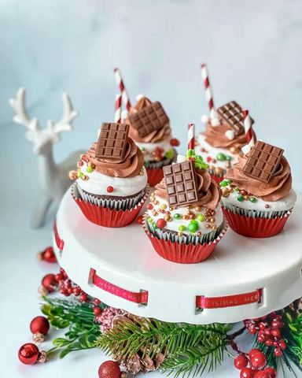

Moja beleška
SačuvanoSastojci
- Sastojci
- Krem
Priprema
Dodatno po želji 16 kockica čokolade kojim ćete puniti kapkejkove + U jednoj činiji promešati brašno, kakao, sodu, prašak za pecivo i so. U drugoj umešati otopljen puter sa šećerima, dodati jedno po jedno jaje muteći i na kraju mleko sobne temperature. Dodati smesu sa jajima smesi sa suvim sastojcima i dodati vrelu vodu. Kratko promešati. Puniti kalupe jednom kašikom smese pa staviti kockicu omiljene čokolade, a onda dodati smese do 2-3 korpice za kapkejk. Peći u prethodno zagrejanoj rerni bez upotrebe ventilatora na 180C oko 20 min. Ohladjene ukrasiti kremom. Za krem je potrebno da veče pre ili nekoliko sati pre pripreme ugrejete slatku pavlaku do vrenja, pa je prelijete preko jedne i druge vrate čokolade (u odvojenim posudama) i sačekate minut pa umešate tako da bude potpuno tečna. Prohladjenu stavite u frižider, pa pred kremkanje umutite mikserom u krem, stavite ga u dresir kesu sa nastavkom za ukrašavanje i napravite svoju čaroliju 🥰
Originalni opis sa Instagrama
Čokoladni cupcakes 🧁 Decembar je mesec keksića, cupcake-ova i tortica, pa u tom maniru danas jedan recept i jedna ideja kako obući kapkejkove u novogodišnje odelo 🥰 Ja sam poželela da moji podsećaju na toplu čokoladu - jer složićete se, ona spada u omiljene zimske napitke 🤗 Sastojci: •125 gr putera •200 gr šećera •1 vanilin šećer •2 jaja •90 ml mleka •75 ml vrele vode •50 gr kakaa •200 gr belog mekog brašna •1 kašičica sode bikarbone •1/2 kašičice praška za pecivo •1/2 kašičice soli Dodatno po želji 16 kockica čokolade kojim ćete puniti kapkejkove Krem: •150 gr mlečne čokolade •150 ml slatke pavlake + •150 gr bele čokolade •150 ml slatke pavlake U jednoj činiji promešati brašno, kakao, sodu, prašak za pecivo i so. U drugoj umešati otopljen puter sa šećerima, dodati jedno po jedno jaje muteći i na kraju mleko sobne temperature. Dodati smesu sa jajima smesi sa suvim sastojcima i dodati vrelu vodu. Kratko promešati. Puniti kalupe jednom kašikom smese pa staviti kockicu omiljene čokolade, a onda dodati smese do 2-3 korpice za kapkejk. Peći u prethodno zagrejanoj rerni bez upotrebe ventilatora na 180C oko 20 min. Ohladjene ukrasiti kremom. Za krem je potrebno da veče pre ili nekoliko sati pre pripreme ugrejete slatku pavlaku do vrenja, pa je prelijete preko jedne i druge vrate čokolade (u odvojenim posudama) i sačekate minut pa umešate tako da bude potpuno tečna. Prohladjenu stavite u frižider, pa pred kremkanje umutite mikserom u krem, stavite ga u dresir kesu sa nastavkom za ukrašavanje i napravite svoju čaroliju 🥰 Kako vam se čine..? 🧁🍭 • • • #kapkejk #kapkejkovi #cokoladnikapkejk #cokoladnikolac #mojirecepti #slatkirecepti #idejezadezert #chocolatecupcakes #hotchocolatecupcakes #newyearcupcakes #christmascupcakes #cupcakelovers #itsthemostwonderfultimeoftheyear